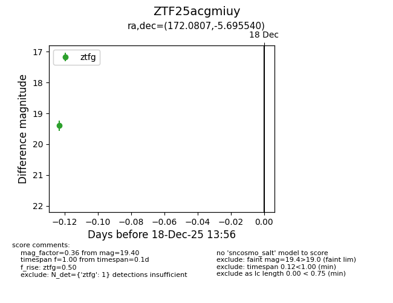
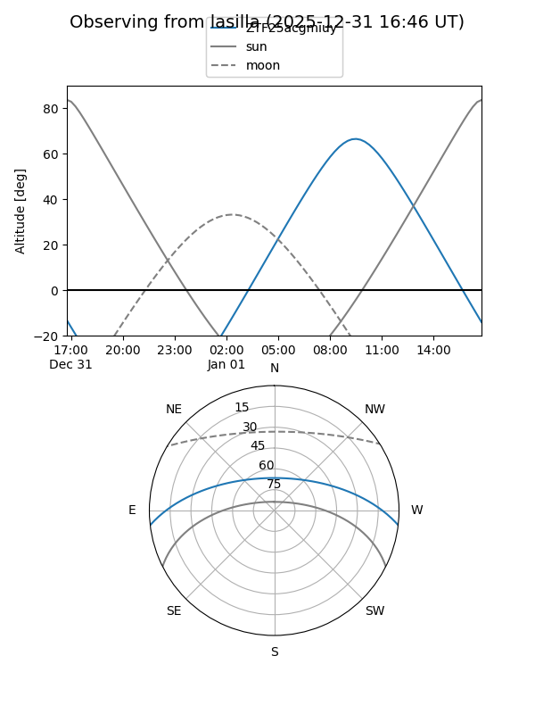
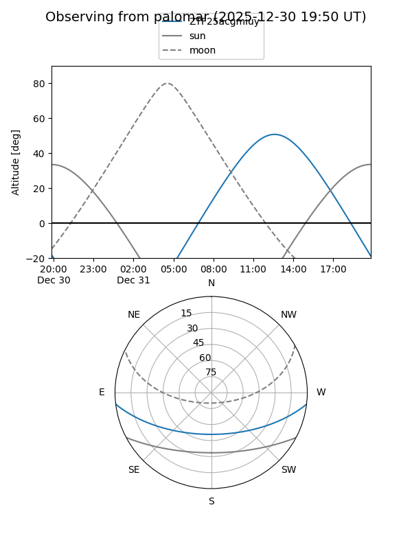
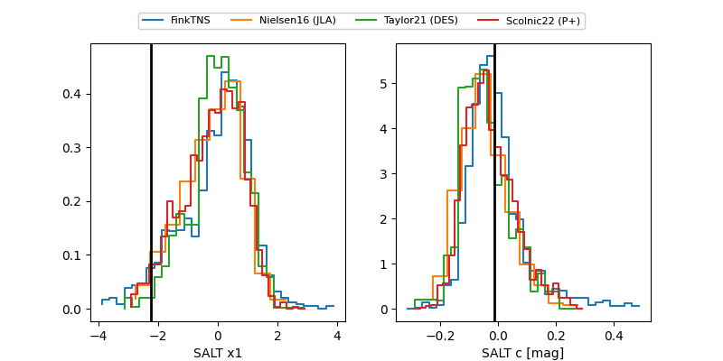

ZTF25acgmiuy
Target ZTF25acgmiuy at 2025-12-21 13:47
Aliases and brokers:
FINK: fink-portal.org/ZTF25acgmiuy
Lasair: lasair-ztf.lsst.ac.uk/objects/ZTF25acgmiuy
ALeRCE: alerce.online/object/ZTF25acgmiuy
alt names
ZTF25acgmiuy (ztf,fink_ztf)
Coordinates:
equatorial (ra, dec) = 172.0807,-5.69554
equatorial (HMS+DMS) = 11:28:19.36,-05:41:43.94
galactic (l, b) = (268.3752,+51.51212)
Flags:
Photometry:
last ztfg=19.56, ztfr=19.43
2 ztfg, 1 ztfr detections
Lightcurve

Visibility


Additional plots
